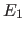
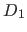
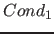
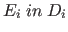
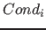
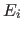
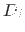
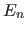
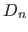
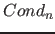

Next: Example Up: Assignments and Loops Previous: Assignments and Loops Contents
test => X=0, X:=X+1, X:=X+2, write(X).
In order to handle assignments, Picat creates new variables at compile time. In the above example, at compile time, Picat creates a new variable, say X1, to hold the value of X after the assignment X:=X+1. Picat replaces X by X1 on the LHS of the assignment. It also replaces all of the occurrences of X to the right of the assignment by X1. When encountering X1:=X1+2, Picat creates another new variable, say X2, to hold the value of X1 after the assignment, and replaces the remaining occurrences of X1 by X2. When write(X2) is executed, the value held in X2, which is 3, is printed. This means that the compiler rewrites the above example as follows:
test => X=0, X1=X+1, X2=X1+2, write(X2).
Picat supports foreach and while statements for programming repetitions. A foreach statement takes the form
foreach ( in , ,where each iterator, , can be followed by an optional condition . Within each iterator,  is an iterating pattern, and  is an expression that gives a compound value. The foreach statement means that,  in , )

end
while (It repeatedly executes)
end
doexecutes
while (
A loop statement forms a name scope. Variables that occur only in a loop, but do not occur before the loop in the outer scope, are local to each iteration of the loop. For example, in the following rule:
p(A) =>
foreach (I in 1 .. A.length)
E = A[I],
writeln(E)
end.
the variables I and E are local, and each iteration of the loop has its own values for these variables.
Claudio Cesar de Sa 2016-05-29